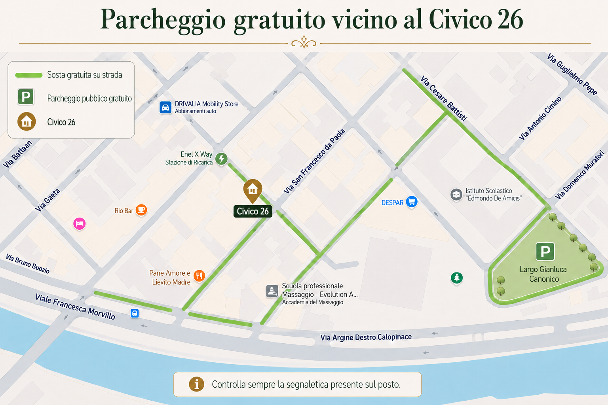

Museo Archeologico Nazionale
Una tappa imperdibile: custodisce i celebri Bronzi di Riace e una straordinaria collezione di reperti della Magna Grecia.
📍 Come arrivareTutto ciò che vi serve per il soggiorno, più i nostri consigli per scoprire Reggio Calabria e dintorni.
Disponibilità indicativa aggiornata dalla struttura. La prenotazione è confermata solo dopo nostra conferma.

Consulta il calendario, seleziona le date e inviaci una richiesta. Controlleremo Booking e Airbnb prima di confermare il soggiorno.
Importante: la richiesta non costituisce prenotazione. Riceverai una conferma all’indirizzo email indicato solo dopo l’approvazione della struttura.
Scoprite Civico 26, casa vacanze nel centro di Reggio Calabria per un massimo di 8 ospiti: tre camere, due bagni, cucina attrezzata, Wi‑Fi e spazi esterni, in posizione comoda per la Stazione Centrale, il Lungomare Falcomatà e Corso Garibaldi.
Camera matrimoniale con scrivania
Camera matrimoniale ampia e luminosa
Camera matrimoniale con scrivania
Cucina attrezzata con zona pranzo
Due bagni completi
Balcone e verandina
Tutte le informazioni utili per vivere al meglio il soggiorno al Civico 26.
Parcheggiare in centro può essere difficile soprattutto negli orari di maggiore affluenza. Qui trovate le soluzioni utili vicino a Civico 26.

Una delle soluzioni che consigliamo per lasciare l'auto e raggiungere comodamente l'appartamento.
📍 Apri su Google MapsUn'altra possibilità nelle vicinanze. Verificate sempre la disponibilità dei posti al vostro arrivo.
📍 Apri su Google MapsTroverete le credenziali per accedere al Wi‑Fi in cucina, vicino alla televisione e dietro il modem.
Il check-in è disponibile a partire dalle 15:00.
Per accedere all'appartamento, ritirate le chiavi dalla Key Box situata sulla destra del portone d'ingresso.
Una volta ritirate le chiavi, salite per tre piani e mezzo. Troverete la porta dell'appartamento contrassegnata dall'insegna “Civico 26”.
Il check-out è previsto entro le 10:00. Al termine del soggiorno, riponete le chiavi nella stessa Key Box, avendo cura di non lasciare impostato il codice di apertura.
L'acqua calda viene prodotta da uno scaldabagno elettrico. Per accenderlo o spegnerlo utilizzate il pulsante presente in corridoio, riconoscibile dall'apposita targhetta.
In caso di interruzione dell'acqua da parte del servizio idrico cittadino, è possibile utilizzare la riserva d'acqua dell'appartamento, con una capacità di circa 500 litri.
Per attivare l'autoclave, utilizzate il pulsante in corridoio accanto a quello dello scaldabagno.
Nell'appartamento sono presenti tre climatizzatori: due nelle camere da letto e uno in cucina.
I climatizzatori delle camere possono essere accesi con il pulsante rosa sul telecomando fissato alla parete.
Il climatizzatore in cucina è attualmente fuori servizio.
Vi chiediamo di non lasciare i climatizzatori accesi quando uscite dall'appartamento.
In cucina sono presenti i cestini per la raccolta differenziata. Per l'organico troverete un cestino sotto il lavandino.
I rifiuti possono essere conferiti nei cassonetti all'esterno del palazzo, sulla destra del portone.
Per aprire i cassonetti è necessaria una chiave presente sul mazzo di chiavi dell'appartamento.
Per qualsiasi necessità, informazione o problema durante il soggiorno, non esitate a contattarci.
Luoghi da vedere, spiagge, sapori locali e natura: tutto diviso in sezioni semplici da consultare da smartphone.
Museo, Lungomare, centro storico e monumenti.
Scilla, Bagnara e Palmi.
Bar, gelaterie, pizzerie, trattorie e ristoranti.
Gambarie, boschi e una giornata nella montagna reggina.
I posti e le esperienze che consigliamo più volentieri.
Le opere esposte nelle stanze, disponibili anche per l'acquisto.
Affacciata sullo Stretto di Messina, Reggio Calabria unisce storia, Magna Grecia, centro storico, mare e panorami sulla Sicilia.
Una tappa imperdibile: custodisce i celebri Bronzi di Riace e una straordinaria collezione di reperti della Magna Grecia.
📍 Come arrivare
Nel cuore del centro cittadino, conserva testimonianze delle diverse fasi storiche di Reggio Calabria.
📍 Come arrivare
Una delle testimonianze archeologiche dell'antica Reggio, visibile nell'area del Lungomare.
📍 Come arrivareUna delle passeggiate più suggestive della città, con vista sullo Stretto e sulla Sicilia. Bellissimo soprattutto al tramonto.
📍 Come arrivare
Anfiteatro sul mare e punto panoramico particolarmente suggestivo al tramonto.
📍 Come arrivare
Una delle passeggiate più rappresentative della città, tra mare, Stretto e costa siciliana.
📍 Come arrivare
Il principale corso del centro, ideale per passeggiare tra negozi, bar, locali e monumenti.
📍 Come arrivare
Recentemente riqualificata, si trova davanti al Museo Archeologico ed è un ottimo punto di partenza per il centro.
📍 Come arrivare
Uno spazio verde piacevole nel cuore della città, a pochi passi dal Lungomare e dal centro storico.
📍 Come arrivare
La Basilica Cattedrale di Maria Santissima Assunta in Cielo, principale luogo di culto della città.
📍 Come arrivare
Uno dei simboli storici della città, con torri e mura che raccontano il passato di Reggio Calabria.
📍 Come arrivareLa costa intorno a Reggio Calabria offre spiagge e atmosfere molto diverse. Queste sono alcune delle nostre preferite.

Scilla è uno dei borghi più suggestivi della Calabria, con una delle spiagge più belle della Costa Viola. Nei weekend estivi può essere molto affollata.
Da non perdere Chianalea, l'antico borgo dei pescatori. Qui vale la pena provare il panino con il pesce spada da Civico 5 e la granita della Gelateria Zanzibar.
📍 Come arrivare
Borgo marinaro della Costa Viola, noto per mare cristallino, panorami, pesca del pesce spada e torrone artigianale. In genere è più tranquilla e meno affollata di Scilla.
📍 Come arrivare
Una delle località più suggestive della Costa Viola. Da non perdere la Tonnara di Palmi e lo Scoglio dell'Ulivarella, particolarmente belli al tramonto.
📍 Come arrivareUna selezione di posti che consigliamo per colazione, gelato, pizza, cucina calabrese e pesce.

Uno dei simboli di Reggio Calabria, sul Lungomare Falcomatà. Gelato artigianale e una fama che rende un po' di attesa quasi inevitabile.
📍 Come arrivare
Aperto 24 ore su 24 e a meno di due minuti a piedi dall'appartamento. Ottimo per la colazione.
📍 Come arrivare
Il nostro bar preferito. Da provare la granita al pistacchio con brioche. La sede principale è a Gallico, con una sede anche in centro.
📍 Come arrivare
Una delle pizzerie che consigliamo di provare. Meglio prenotare nei weekend e in alta stagione.
📍 Come arrivare
Locale accogliente con una cucina che unisce sapori della tradizione calabrese e tecniche moderne.
📍 Come arrivare
Trattoria nel centro di Reggio Calabria con cucina calabrese e mediterranea ispirata alle ricette di famiglia.
📍 Come arrivare
Trattoria di pesce a gestione familiare, con attenzione alla tradizione e alle materie prime locali.
📍 Come arrivare
Ristorante nel centro che propone una rivisitazione contemporanea della cucina reggina con materie prime locali e stagionali.
📍 Come arrivare
Uno dei nostri posti del cuore, immerso nella natura dell'Aspromonte. Cucina tipica, prodotti locali e panorama. È indispensabile l'auto e conviene prenotare con anticipo.
📍 Come arrivareAlle spalle della città, in meno di un'ora, il paesaggio cambia completamente: dallo Stretto ai boschi dell'Aspromonte.
Se desiderate trascorrere una giornata immersi nella natura, vi consigliamo di raggiungere Gambarie, il principale centro turistico dell'Aspromonte, e di esplorare i boschi e i paesaggi circostanti.
Potete raggiungere Gambarie con l'autobus 319, che parte da Piazza Garibaldi a pochi passi dall'appartamento, oppure in auto in circa 30 minuti.
📍 Gambarie su Google Maps 🚌 Orari ATAM 🌲 Parco NazionaleUna piccola selezione personale: i posti e le esperienze che consiglieremmo a un amico in visita a Reggio.
Bar Winner: se vi piace il pistacchio, provate la granita al pistacchio con brioche.
📍 Come arrivareLa Costa Viola dà il meglio di sé verso sera. Scilla e Palmi sono tra i posti che preferiamo per godersi il tramonto.
A Chianalea ci piace consigliare il panino con il pesce spada da Civico 5.
📍 Come arrivareSe avete l'auto, salite verso Gambarie e l'Aspromonte: in poco tempo passerete dal mare ai boschi.
📍 Come arrivareLe opere presenti nell'appartamento fanno parte dell'esperienza di Civico 26 e sono disponibili per l'acquisto.

Un racconto illustrato di Reggio Calabria costruito attraverso alcuni dei suoi simboli più riconoscibili: San Giorgio, il pesce spada, il mare dello Stretto, l’Aspromonte e il tramonto sulla Costa Viola, con Scilla e l’Etna sullo sfondo.
L’opera raccoglie paesaggi, tradizioni e piccoli frammenti della vita locale trasformandoli in una mappa immaginaria della città e della sua identità mediterranea.
L'opera è disponibile per l'acquisto.
🎨 Scopri Sasha Merenda su Instagram